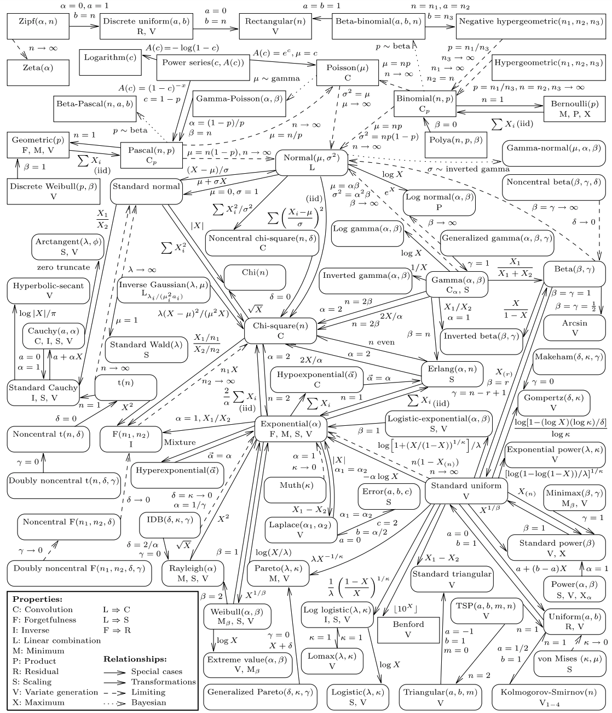

Probability theory
Contents
Probability theory¶
To begin developing a theory of probability, it is useful to consider a simple random process such as a flipping a coin. There are two possible outcomes of a single coin toss, “Heads” or “Tails,” which we’ll denote \(H\) and \(T\), respectively. The sample space is the set of possible outcomes:
indicating that one of these two events must occur.
A coin flip is an example of a random process that has two possible outcomes, called a Bernoulli trial, where the probability of the event occuring is given by \(p\) (and, obviously, of it not occuring by \(1-p\)). If a coin is fair, the probability of Heads (or, equivalently, of Tails) is \(p=0.5\).
Examples of binary outcomes that can be modeled as Bernoulli trials include:
a single coin flip comes up Heads;
a customer chooses whether to buy a product;
a company declares bankruptcy next week; or
a stock price increases in the next 15 seconds.
Each outcome \(\omega \in \Omega\) has an associated probability, given by the probability measure \(\P: \Omega \rightarrow [0,1]\). For a fair coin flip,
To be sensible, the probability measure must be defined such that the probability of any event in the sample space occuring is 1, so
Random variables¶
A random variable is a function that maps an event to a real number. For example, define the random variable \(X\) to be the number of Heads that we observe in a single coin flip,
This says simply that if the event \(\omega=T\) occurs then \(X=0\), and if the event \(\omega=H\) occurs then \(X=1\). In general, a random variable (“RV”) maps from an event space to some real number: \(X\!: \Omega \rightarrow \mathbb{R}\).
We can then apply the probability measure to \(X\). For some \(x\in \mathbb R\),
In words, this says simply that the probability that the random variable \(X\) takes on a value of \(x\) is equal to the probability that an outcome \(\omega\) occurs that causes \(X\) to equal \(x\). Therefore,
It is common practice to write simply \(\P(x)\) rather than \(\P(X=x)\).
More generally, a random variable defined for a Bernoulli trial with probability \(p\) is
The event that leads to \(X=1\) is often called “success.”
Let’s apply the same framework to an experiment where we flip a coin twice. As before, the sample space is the set of possible outcomes:
The probability measure is
As expected, \(\P(\Omega) = 1.\) Again, define the random variable \(X\) to be the number of Heads that we observe in our two coin flips,
Applying the probability measure to \(X\),
Formally, an event is any subset of \(\Omega\). For example, the event that at least one of the flips is Heads is
The probability of this event is the sum of the probabilities of each element in the event,
Extra credit
Modern probability theory, introduced in the 1930s by Andrey Kolmogorov, is formally defined using a probability space \((\Omega, \mathcal{F}, \P)\), where \(\mathcal{F}\) is the set of all possible events is (called the event space or the “\(\sigma\)-algebra”). In the two-flip example, this is
In this example, \(\Omega\) is countable, so \(\mathcal{F}\) is the power set of \(\Omega\), and its cardinality (the number of elements in the set) is \(2^4=16\). More generally, though, the sample space need not be countable, and a different \(\sigma\)-algebra must be used. A nice introduction to these ideas may be found on Wikipedia.
Binomial distribution¶
Generalizing from two coin flips, suppose that we repeat a Bernoulli trial \(n\) times. The trials are assumed to be mutually independent, meaning that the outcome of each trial has no effect on any other outcomes. Let \(X\) equal the number of Heads out of these trials. We characterize the random variable \(X\) by determining \(\P(X=k)\) for any possible value of \(k\). This is given by the probability mass function (PMF),
A random variable with this PMF has a Binomial distribution, which we write as \(X \sim B(n,p)\).
Exercise
Show that when \(n=1\) this PMF reduces to probability function for a Bernoulli trial.
Solution
We have
and
which matches the function in (7).
The PMF for the Binomial distribution (along with many others) is available in the scipy module. Here we calculate \(f(k; 3, 0.5)\) for each possible \(k\).
n = 3 # number of trials
p = 0.5 # probability of success in each trial
scs.binom.pmf([0, 1, 2, 3], n, p)
array([0.125, 0.375, 0.375, 0.125])
As we increase \(n\), the probabilities associated with each outcome change, and so does the shape of the PMF.
ntrials = [1, 2, 3, 5, 10, 15]
fig, axes = plt.subplots(2, 3, figsize=(12, 8))
fig.suptitle('Probability of “Heads”', fontsize=14)
plt.subplots_adjust(hspace=.25, wspace=0.25)
for n,ax in zip(ntrials, axes.ravel()):
domain = np.arange(n+1)
probs = scs.binom(n, 0.5).pmf(domain)
ax.bar(domain, probs, alpha=0.8, align='center')
ax.set(title=f'$n = {n}$',
ylim=(0, np.round(probs.max()*1.1,2)),
xticks=np.arange(n+1).astype(int) if n<10 else np.arange(0,n+1,n/5).astype(int))
plt.show()

Expected value and variance¶
The expected value or expectation of a discrete random variable \(X\) with possible outcomes \((x_1, x_2, \ldots, x_n)\) is the weighted average of the outcomes,
The expected value, often denoted by \(\mu_X\), measures the location or central tendency of the distribution.
For example, suppose we flip a fair coin 3 times, and assign to \(X\) the number of times Heads comes up, so \(X\sim B(3,0.5)\). The sample space is
so the random variable \(X\) has these possible values:
The expectation of \(X\) is therefore
As this example makes clear, the expected value of \(X\) need not be a value from any outcome in its sample space.
The variance of \(X\) is a measure of how much the probability mass is spread out around its expected value. It is defined as the weighted sum of the squared deviations,
The variance is typically denoted by \(\sigma_X^2\). Its square-root, \(\sigma_X\), is the standard deviation of the distribution.
Continuing to define \(X\) as above, we have
The scipy module provides the expected value (also called the mean), variance, and standard deviation of a random variable given the parameters of its distribution.
B = scs.binom(3, 0.5)
print(B.mean())
print(B.var())
print(B.std())
1.5
0.75
0.8660254037844386
Exercise
Find the expected value and variance of a Bernoulli random variable.
Solution
Using the defition of expectation and variance,
The following code uses assert to verify that a boolean expression is True; if it isn’t, an exception is raised. These conditions are all true, so the code executes without raising any exceptions.
for p in [0.1, 0.4, 0.99]:
assert scs.bernoulli(p).mean() == p
assert scs.bernoulli(p).var() == p*(1-p)
Linearity of expectations¶
We saw above that the mean and variance of a distribution are defined using the expectations operator \(\E\), which we redefine here as applying to any function \(g(\cdot)\) of the random variable \(X\),
In the simplest case that we previously considered, \(g(x)=x\).
It follows immediately that, for any constant \(a\),
This holds for any nonrandom — also called nonstochastic — variable. In other words, if \(a\) doesn’t depend on the outcome \(\omega\) then its value isn’t random, and its expectation is just \(a\).
Exercise
Find the variance of a constant \(a\).
Solution
Applying the definition of variance,
Not surprisingly, \(a\) has no variance — it’s constant!
More generally, we can show that the expectations operator \(\E\) is linear. Let \(Z=a+bX\) for some constants \(a\) and \(b\). Then
The variance, however, is not linear:
In particular, this implies that
which is especially important when we calculate the volatility of portfolios that include short positions.
Also note that if both \(X\) and \(Y\) are random variables, then
Key fact
We can use these facts to shift and rescale a random variable. Specifically, if \(\E(X)=0\) and \(\var(X)=1\) and we let
then \(\E(Y) = \mu\) and \(\var(Y) = \sigma^2\).
Key fact
The linearity of the expectations operator allows us to write variance conveniently as
Exercise
The random variable \(Y\) follows a Binomial distribution with parameters \(n\) and \(p\). Find \(\E(Y)\) and \(\var(Y)\).
Solution
Since \(Y\sim B(n,p)\), it is the sum of \(n\) independent Bernoulli trials. We saw previously that if \(X\) has a Bernoulli distribution then \(\E(X)=p\) and \(\var(X)=p(1-p)\). Therefore,
and
The first result is quite intuitive: If we flip a fair coin \(n\) times, we would expect it to come up Heads \(0.5\times n\) times. But of course it might turn up Heads more or less than that. The variance, in this case \(0.25\times n\), tells us how variability we can expect in the outcome. We will soon delve into this more deeply.
Note also that the calculation of the variance here is correct only because we assumed that the the Bernoulli trials are independent; that is, the outcome of each trial has no effect on the outcomes of other trials. If the trials are related in some way, these calculations no longer hold, as we’ll see when we discuss covariance.
The normal distribution¶
Consider what happens as we increase the number of trials. In particular, suppose \(n=50\), so \(\E(X)=25\) and \(\var(X)=12.5\). The figure below shows the distribution of outcomes according to the binomial distribution along with a continuous function called the normal distribution.
The fit of this curve to the binomial distribution is very good — the line and bars match exactly for most values of \(X\). As \(n\) increases, the fit continues to get better; in the limit, the binomial distribution converges to the normal distribution.
fig, ax = plt.subplots(figsize=(8,8))
n = 50
# Binomial PMF
domain = np.arange(n+1)
probs = scs.binom(n, 0.5).pmf(domain)
ax.bar(domain, probs, alpha=0.8, align='center', label='$B(n,p)$')
# Normal density function
μ = n*p
σ = np.sqrt(n*p*(1-p))
x = np.linspace(0, n, 250)
pdf = scs.norm.pdf(x, μ, σ)
ax.plot(x, pdf, 'g-', linewidth=2, label='$N(\mu,\sigma^2)$')
ax.grid(alpha=0.3)
ax.legend(loc='upper left')
plt.show()

The normal distribution is also called the “Gaussian distribution” for Carl Friedrich Gauss, one of the greatest mathematicians of all time.
Gauss is pictured in this German banknote along with the normal density function. 
In contrast to the binomial distribution, which is only defined over certain discrete values, the normal distribution is a continuous distribution. Like all such continuous distributions, it is characterized by a probability density function (PDF) that is defined over a continuous domain.
The PDF for a random variable \(X\) with a normal distribution, which we write as \(X \sim \N(\mu,\sigma^2)\), is given by
The parameters \(\mu\) and \(\sigma\) control the location and shape of the distribution. With \(\mu=0\) and \(\sigma=1\), we have the “standard” normal distribution, \(X \sim \N(0,1)\), with density
fig, ax = plt.subplots(figsize=(12,8))
x = np.linspace(-3,3,250)
for μ,σ in [(0,.5), (0,1), (0,2), (-2,1)]:
ax.plot(x, scs.norm.pdf(x, loc=μ, scale=σ), lw=3,
label=r'$\mu={}, \sigma^2={}$'.format(μ,σ**2))
ax.legend(prop={'size': 14})
ax.grid(alpha=0.25)
ax.set_ylabel('Density', size=14)
ax.set_xlabel('$x$', size=14)
ax.set_title('Normal Probability Density Function', size=16)
ax.set_xlim(-3,3)
plt.show()

Rather than directly giving probabilities, the PDF is a tool for calculating the probability. In particular, we integrate under the curve to find the cumulative distribution function (CDF), which gives the probability that the random variable \(X\) is less than a given value \(x\):
The CDF and PDF of a normal distribution are often written as \(\Phi(x)\) and \(\phi(x)\), respectively.
The plots below show the area under the PDF to the left of \(x=1\), and the corresponding value on the CDF, both of which give
xlim = (-4, 4)
x = np.linspace(*xlim, 250)
fig, (ax1, ax2) = plt.subplots(1, 2, figsize=(16,6))
fig.suptitle(r'Standard Normal Distribution', fontsize=16)
# pdf
ax1.plot(x, scs.norm.pdf(x), 'b-', lw=2)
ax1.set_title('Probability Density Function')
ax1.set_ylabel('Density', fontsize=14)
# cdf
ax2.plot(x, scs.norm.cdf(x), 'g-', lw=3, zorder=0)
ax2.set_title('Cumulative Distribution Function')
ax2.set_yticks([0, .25, .5, .75, 1])
ax2.set_ylabel('Probability', fontsize=14)
for ax in [ax1, ax2]:
ax.set_xlabel('X', fontsize=14)
ax.grid(alpha=0.2)
ax.set_xlim(xlim)
ax.set_ylim(0, None)
x0 = 1
cdf_x = scs.norm.cdf(x0)
# area under pdf
_x = np.linspace(xlim[0], x0, 100)
ax1.fill_between(_x, scs.norm.pdf(_x), color='g', alpha=0.2)
ax1.text(0.02, 0.98, 'Area: {:.3f}'.format(cdf_x),
transform=ax1.transAxes, verticalalignment='top',
fontsize=14, backgroundcolor='white')
# lines on cdf
ax2.vlines(x0, -0.05, cdf_x, color='k', ls=':', zorder=10)
ax2.hlines(cdf_x, xlim[0], x0, color='k', ls=':', zorder=10)
ax2.scatter(x0, cdf_x, color='k', zorder=10)
plt.show()

We can calculate the probability that \(X\) is between \(a\) and \(b\) (with \(a<b\)) by calculating
For example, the probability that a random draw of \(X\sim \N(0,1)\) will be between 1 and 2 is:
scs.norm().cdf(2) - scs.norm().cdf(1)
0.13590512198327787
fig, ax = plt.subplots()
px = scs.norm.pdf(x)
ax.plot(x, px, 'b-', lw=2)
ax.grid(alpha=0.2)
ax.set_xlim(xlim)
ax.set_ylim(0, None)
ax.set_xticks(np.arange(-4,5))
_x = np.linspace(xlim[0], 2, 100)
px = scs.norm.pdf(_x)
ax.fill_between(_x, px, color='g', alpha=0.2, label='$F(2)$')
ax.fill_between(_x[_x<1], px[_x<1], color='g', alpha=0.2)
ax.text(1.5, 0.03, '0.136', horizontalalignment='center')
plt.show()

A valid CDF must have the following properties:
\(F(x)\) is non-decreasing, meaning that \(f(x)\geq 0\) for all \(x\);
\(0\leq F(x)\leq 1\); and
\(F(-\infty)=0\) and \(F(\infty)=1\).
The fact that \(F(\infty)=1\) explains why we divide by \(\sqrt{2\pi}\) in the normal density function; it is simply a normalizing constant to force the probability to be one in the limit. To see why this is the necessary constant, refer to our previous discussion of the Gaussian integral.
A PDF is not a probability function
There are two important facts about probability density functions that may seem surprising at first:
\(f(x)\) does not give the probability of \(x\). It is simply an input to the calculation of the probability of a possible outcome.
Since \(f(x)\) is not a probability, there is no reason that it must be less than 1. It must, however, never be negative.
Perhaps most surprising is the fact that \(\Pr(X=x)=0\) for any \(x\). Yes, you read that right: the probability that \(X\) takes on any particular value is zero. We can see this by using the definition of the CDF:
Ituitively this is because there are an infinite number of outcomes so the probability of any one of them is \(\frac{1}{\infty} = 0\).
Expected value of continuous RVs¶
The expected value of a continuous random variable is defined analagously to the defintion above for the discrete case:
Again, it is simply the weighted average of all possible values of \(x\). The only difference is that we calcualate the probability over the entire real line, and we use the PDF instead of the PMF.
Similarly, the variance of a continuous random variable is
It can be shown for the normal distribution that the two parameters of the density function, \(\mu\) and \(\sigma^2\), are equal to the expected value and variance of the distribution, \(\mu_X\) and \(\sigma^2_X\), respectively. In other words, if \(X \sim \N(\mu, \sigma^2)\) then \(\E(X) = \mu\) and \(\var(X)=\sigma^2.\)
# confirm that the mean of a normal dist is μ and variance is σ^2 for different vaues
for μ in [-1, 0, 1]:
for σ in [0.5, 2, 4]:
X = scs.norm(μ,σ)
assert (X.mean() == μ) and (X.var() == σ**2)
This fact—and that the normal distribution is so important throughout statistics—is of course the reason that we use the symbols \(\mu\) and \(\sigma^2\) both for the parameters of the probability distribution and as general symbols for mean and variance.
As \(\sigma\) increases, both the PDF and CDF becomes flatter to reflect the greater probability of a wider range of outcomes.
fig, (ax1, ax2) = plt.subplots(1, 2, figsize=(16,6))
x = np.linspace(-5, 5, 250)
for σ in [0.35, 1, 3]:
ax1.plot(x, scs.norm.pdf(x, scale=σ), lw=2, label='$\sigma={}$'.format(σ))
ax2.plot(x, scs.norm.cdf(x, scale=σ), lw=2, label='$\sigma={}$'.format(σ))
for ax in (ax1, ax2):
ax.legend(loc='upper left')
ax.grid(alpha=0.25)
ax1.set_title('Probability density function')
ax2.set_title('Cumulative distribution function')
ax2.set_yticks([0, .25, .5, .75, 1])
plt.show()

Exercise
Make a plot like the one above to show how the PDF and CDF shift to the left or right as we change \(\mu\).
Poisson distribution¶
Consider again the binomial distribution as \(n\to\infty\), but assume that the probability \(p\) is defined such that the product of \(n\) and \(p\) remains constant. In particular, assume that for any \(n\),
for some constant \(\lambda > 0\). In other words, for each \(n\), we let \(p_{n} = \frac{\lambda}{n}\) be a sequence of probabilities. It can be shown that
The function in the limit gives the PMF of a random variable \(X\) with a Poisson distribution:
Both panels of the figure below show a Poisson distribution with \(\lambda=5\), along with a Binomial distribution. In both panels, \(np=5\), but in the left panel \(n=25\) while in the right \(n=250\). It is clear that the Binomial probabilities get closer to the Poisson probabilities with the larger value of \(n\).
λ=5
domain = np.arange(16)
p_poiss = scs.poisson.pmf(domain, λ)
fig, axes = plt.subplots(1, 2, figsize=(16,6))
for n,ax in zip([25,250], axes.ravel()):
p = λ / n
p_binom = scs.binom(n, p).pmf(domain)
ax.bar(domain, p_binom, alpha=0.75, align='center', label='$B({},{})$'.format(p,n))
ax.plot(domain, p_poiss, 'o', color='orange', label='$Pois({})$'.format(λ))
ax.legend(loc='upper right')
ax.set_xlim(-1,None)
ax.set_ylim(0,0.2)
ax.grid(alpha=0.1)
plt.show()

The Poisson distribution is useful for modelling events that occur rarely in a short interval of time, but where there are many such intervals. Examples include:
how many creditors may default on a loan in a year;
how many car accidents occur in a group of insured drivers;
how many customers enter a store in a day;
how many people call a customer support line in an hour.
The parameter \(\lambda > 0\) gives the rate per period at which events are expected to occur. It equals both the mean and the variance of the distribution.
print('E(X) = {}'.format(scs.poisson(λ).mean()))
print('Var(X) = {}'.format(scs.poisson(λ).var()))
E(X) = 5.0
Var(X) = 5.0
x = np.arange(0, 20)
fig, (ax1, ax2) = plt.subplots(1, 2, figsize=(16,6))
prop_cycle = plt.rcParams['axes.prop_cycle']
colors = prop_cycle.by_key()['color']
for i,λ in enumerate([1, 4.5, 12]):
p = scs.poisson.pmf(x, λ)
ax1.plot(x, p, 'o', label=f'$\lambda={λ}$', zorder=3)
ax1.plot(x, p, ':', color=colors[i])
P = scs.poisson.cdf(x, λ)
ax2.scatter(x, P, lw=3, label=f'$\lambda={λ}$')
for k in range(1,len(x)):
ax2.plot([k-1,k], [P[k-1],P[k-1]], '-', color=colors[i])
for ax in [ax1, ax2]:
ax.grid(alpha=0.3)
ax.set_xticks([0, 5, 10, 15, 20])
ax.set_xlabel('k')
ax1.set_title('Probability mass function')
ax1.legend(loc='upper right')
ax1.set_ylabel('P(X=k)')
ax2.set_title('Cumulative distribution function')
ax2.legend(loc='lower right')
ax2.set_ylabel('P(X≤k)')
ax2.set_yticks([0, .25, .5, .75, 1])
plt.show()

Note that the PMF is define only over the integers; the lines between the dots are simply visual aids. Note also that \(\lambda\) can be any positive real number.
Log-normal distribution¶
Suppose \(Y \sim \N(\mu,\sigma^2)\), and define
Then \(X\) has a Log-normal distribution with PDF
The distribution is defined only for \(x>0\). (Given its definition, regardless of the realization of \(Y\), the value for \(X\) will always be positive.)
The plots below show PDFs and CDFs for log-normal random variables as we vary \(\sigma\) but fix \(\mu=0\).
x = np.linspace(0, 5, 250)
fig, (ax1, ax2) = plt.subplots(1, 2, figsize=(16,6))
for σ in [0.25, 0.5, 1, 2]:
ax1.plot(x, scs.lognorm.pdf(x, s=σ), lw=3, label='$\sigma={}$'.format(σ))
ax2.plot(x, scs.lognorm.cdf(x, s=σ), lw=3, label='$\sigma={}$'.format(σ))
ax1.legend(loc='upper right')
ax1.grid(alpha=0.3)
ax2.grid(alpha=0.3)
ax1.set_title('Probability density function')
ax2.set_title('Cumulative distribution function')
ax2.set_yticks([0, .25, .5, .75, 1])
plt.show()

Notice that despite holding \(\mu\) constant, the location of the PDF shifts as we change \(\sigma\). The mean of the distribution must therefore depend also on \(\sigma\), and in fact is given by
σ = 1
np.exp(σ**2 / 2) # μ=0
1.6487212707001282
scs.lognorm(s=1).mean()
1.6487212707001282
The median is \(e^{\mu}\), which can easily be seen from the plots of the CDFs above.
scs.lognorm(s=1).median()
1.0
The log-normal distribution is often used in various financial applications. One reason is that, since the price of a stock can never be negative, it makes sense to model the price with a distribution that also never gives negative values.
Student’s \(t\)-distribution¶
The \(t\)-distribution is important in many contexts. Its PDF is
where the parameter \(\nu>0\) (the Greek letter nu) is the degrees of freedom and controls the shape of the distribution.
x = np.linspace(-5, 5, 250)
fig, (ax1, ax2) = plt.subplots(1, 2, figsize=(16,6))
for ν in [1, 2, 5]:
ax1.plot(x, scs.t.pdf(x, ν), lw=2, label='$\\nu={}$'.format(ν))
ax2.plot(x, scs.t.cdf(x, ν), lw=2, label='$\\nu={}$'.format(ν))
for ax in [ax1, ax2]:
ax.legend(loc='upper left')
ax.grid(ls='--')
ax1.set_title('Probability Density Function')
ax2.set_title('Cumulative Density Function')
ax2.set_yticks([0, .25, .5, .75, 1])
plt.show()

As \(\nu \rightarrow \infty\), the distribution converges to a normal distribution.
x = np.linspace(-5, 5, 100)
fig, ax = plt.subplots(figsize=(12,6))
ax.plot(x, scs.norm.pdf(x), 'k-', lw=2, label='$N(0,1)$')
for ν in [1,2,5,100]:
ax.plot(x, scs.t.pdf(x, ν), 'o-', alpha=0.4, lw=2, label='$T(\\nu={})$'.format(ν))
ax.legend(loc='upper left')
ax.grid(alpha=0.3)
ax.set_xlim((-5,5))
plt.show()

Extra credit
The proof of this convergence is relatively easy if we use the observation that
We have
which is the PDF of the standard normal distribution.
Other distributions¶
Many probability distributions have been developed by researchers seeking to describe various probabilistic phenomena. As we’ve seen with the connections between the several distributions above, distributions are usually related to others by making particular assumptions or by taking limits of parameters. The figure below, from Leemis and McQueston [2008], shows the relationships between many (but by no means all) probability distributions. You can see, for example, that both the Poisson and Normal are limiting distributions of the Binomial distribution.
{kind=link}